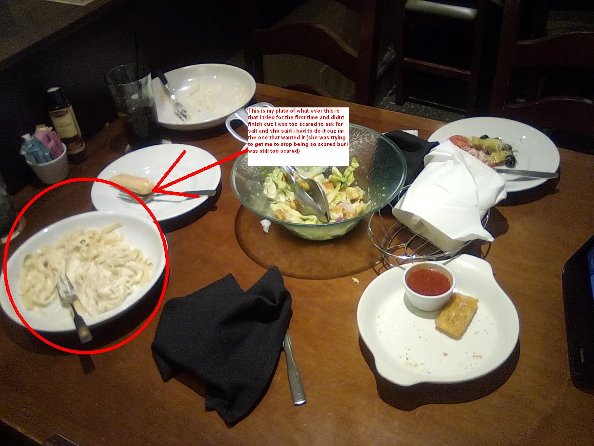

LaZuLi PaRaDisE - Life update!


In 2 days as of writing this, I will be on a plane heading
towards the city that my girlfriend lives in. On this plane, I will take 
everything I own that I want to keep (shipping some of it), including my cat
named Takkun. This is because I will be
living with her from now on. I have never been so excited in my entire life.
Our one year anniversary was on the 23rd at 6:07pm.
Ever since that day, I have been completely obsessed with her. Well,
actually ever since we met for the first time. That initial
"honey moon" phase that people go through, it was never a phase for me. I am
still just as obsessed with her as when we started
dating. I still think of her non stop. This is what i have been hoping and
praying for for an entire year now. It's going to improve
my life so much. Because I will be getting out of the house regularly and I
wont be scared because I'll have her there to protect me.
And I'll be there to protect her. I am very very very excited, because she
is also taking me on various trips and things like that.
I dont care much for travel to be honest, but i'll go anywhere with her. She
really likes to travel, so i am more than happy to go
with her, and see her happy doing it. I dont remember if i mentioned this in
my last blog, but she bought me 3 Haibane Renmei figures
that i have been wanting for a rlly long time. So im very excited to have
those. She also got me a ton of shrimp stuff (the ebifurai from
sumikko Gurashi) I feel really bad because for some reason i feel guilty
when people spend money on me, but she really likes to
do that, so i kind of have to learn to accept it. In the next few weeks,
either before or after I return from our first trip shes
taking me on, i will write a blog about some of my hobbies. I meant to do
that earlier this year but got distracted with stuff.
But i finally remembered, and wrote this, and will be writing more stuff,
and also making more things.
Oh, i forgot to include this above, but i wil lbe living with her and her
family, and her family makes like, fresh food.
not like processed slop. Me and my family are poor, like today my power was
shut off because we couldnt pay for it, but
thankfully we scrapped together money to be able to. But because of that, my
diet is very poor. Which is made worse
by the fact that im a very picky eater. Ive never even had a burger or steak
or anything like that. Which is not
very fun for me, and it makes me really embarased and angry at my self. And
that also makes my diet very very poor.
BUT, her family makes very good food, so i will finally get to eat real
food, which i am excited for. And, when me and
my girlfriend met IRL the first time (and only time as of time of writing
this) she got me to try new food!
Which is very very rare, becuase normally it scares me so much that ill cry
or start shaking if i am being made to try something new
(Depending on what it is, i have no issue trying new drinks or sweets, but
normal food is what im scared of). But with her, i just did it.
She encouraged me to do it, ordered me something ive nver had, and i just
ate it. and i liked it. I didnt finish my plate, but if it had
more salt in it, i probably would have. There are images in my blog titled
"My GF" which is linked there, i will also attach some
photos to this blog as well for reference.I love her so very much and im so
excited for her to change my life even more. The day she
proposes to me, i am going ot freeeeeak out and be so happy.
_
{\o/}
/_\
made by LaZuLi PaRaDisE|XMPP/Email:
LaZuLiPaRaDisE@disroot.org